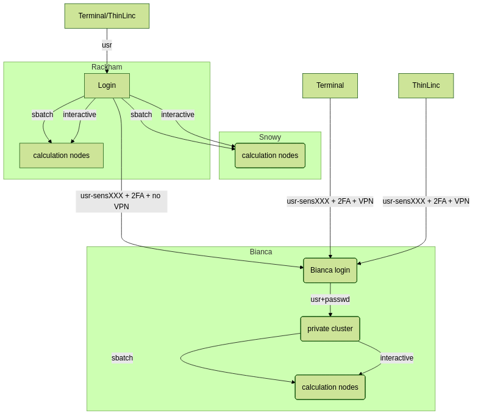
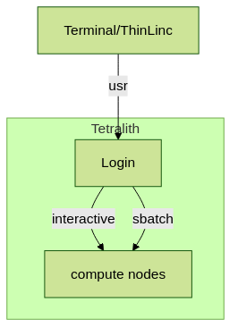

Running R in batch mode¶
Questions
- What is a batch job?
- How to write a batch script and submit a batch job?
Objectives
- Short introduction to SLURM scheduler
- Show structure of a batch script
- Examples to try
Compute allocations in this workshop
- Pelle/Rackham:
uppmax2025-2-360 - Kebnekaise:
hpc2n2025-151 - Cosmos:
lu2025-2-94 - Tetralith:
naiss2025-22-934 - Dardel:
naiss2025-22-934 - Alvis:
naiss2025-22-934
Storage space for this workshop
- Pelle/Rackham:
/proj/r-matlab-julia-pelle - Kebnekaise:
/proj/nobackup/fall-courses - Tetralith:
/proj/courses-fall-2025/users/ - Dardel:
/cfs/klemming/projects/snic/courses-fall-2025 - Alvis:
/mimer/NOBACKUP/groups/courses-fall-2025/
Overview of the UPPMAX systems¶

Overview of the HPC2N system¶

Overview of the LUNARC system¶

Overview of the NSC system¶

Any longer, resource-intensive, or parallel jobs must be run through a batch script.
The batch system used at UPPMAX, HPC2N, LUNARC, NSC, and PDC (and most other HPC centres in Sweden) is called Slurm.
Slurm is an Open Source job scheduler, which provides three key functions
- Keeps track of available system resources
- Enforces local system resource usage and job scheduling policies
- Manages a job queue, distributing work across resources according to policies
In order to run a batch job, you need to create and submit a SLURM submit file (also called a batch submit file, a batch script, or a job script).
Guides and documentation at: https://docs.hpc2n.umu.se/documentation/batchsystem/intro/ and https://docs.uppmax.uu.se/cluster_guides/slurm/ and https://lunarc-documentation.readthedocs.io/en/latest/manual/manual_intro/ and https://www.nsc.liu.se/support/batch-jobs/introduction/ and https://support.pdc.kth.se/doc/support-docs/run_jobs/job_scheduling/
Workflow¶
- Write a batch script
- Inside the batch script you need to load the modules you need (R and any prerequisites)
- If you are using any own-installed packages, make sure R_LIBS_USER is set (export R_LIBS_USER=/path/to/my/R-packages)
- Ask for resources depending on if it is a parallel job or a serial job, if you need GPUs or not, etc.
- Give the command(s) to your R script
- Submit batch script with
sbatch <my-batch-script-for-R.sh>
Common file extensions for batch scripts are .sh or .batch, but they are not necessary. You can choose any name that makes sense to you.
Useful commands to the batch system¶
- Submit job:
sbatch <jobscript.sh> - Get list of your jobs:
squeue --meORsqueue -u <username> - Check on a specific job:
scontrol show job <job-id> - Delete a specific job:
scancel <job-id> - Useful info about a job:
sacct -l -j <job-id> | less -S - Url to a page with info about the job (Kebnekaise only):
job-usage <job-id>
.. keypoints::
- The Slurm scheduler handles allocations to the calculation nodes
- Interactive sessions was presented in the previous presentation
- Batch jobs runs without interaction with the user
- A batch script consists of a part with Slurm parameters describing the allocation and a second part describing the actual work within the job, for instance one or several R scripts.
- Remember to include possible input arguments to the R script in the batch script.
Warning: Modules on Dardel
If you are using Dardel, then note that there are 13 pre-loaded modules when you login, most of which are related to the machine being a Cray. If you do module purge there, they will all be removed together with the application software modules you wanted to purge. This may cause problems.
List of modules that are pre-loaded (March 2025) and which will be removed with module purge:
- craype-x86-rome
- libfabric/1.20.1
- craype-network-ofi
- perftools-base/23.12.0
- xpmem/2.8.2-1.0_3.9__g84a27a5.shasta
- cce/17.0.0
- craype/2.7.30
- cray-dsmml/0.2.2
- cray-mpich/8.1.28
- cray-libsci/23.12.5
- PrgEnv-cray/8.5.0
- snic-env/1.0.0
You may have to reload all of these if you do module purge. The easiest solution is this:
- Immediately after logging in, and before loading any modules (assuming you have not added any to
.bashrcdo
- then, when you have done a
module purgeto remove some application software modules you have loaded (like R and prerequisites) and want to load a different version perhaps, do
That will restore the preloaded modules.
Example R batch scripts¶
Serial code¶
Type-along
Short serial batch example for running the code hello.R
Short serial example script for Pelle. Loading R/4.4.2
#!/bin/bash -l
#SBATCH -A uppmax2025-2-360 # Course project id. Change to your own project ID after the course
#SBATCH --time=00:10:00 # Asking for 10 minutes
#SBATCH -n 1 # Asking for 1 core
# Load any modules you need, here R/4.4.2
module load R/4.4.2-gfbf-2024a
# Run your R script (here 'hello.R')
R --no-save --quiet < hello.R
Short serial example for running on Kebnekaise. Loading R/4.4.1 and prerequisites
#!/bin/bash
#SBATCH -A hpc2n2025-151 # Change to your own project ID
#SBATCH --time=00:10:00 # Asking for 10 minutes
#SBATCH -n 1 # Asking for 1 core
# Load any modules you need, here R/4.4.1 and prerequisites
module load GCC/13.2.0 R/4.4.1
# Run your R script (here 'hello.R')
R --no-save --quiet < hello.R
Short serial example for running on Cosmos. Loading R/4.2.1 and prerequisites
#!/bin/bash
#SBATCH -A lu2025-2-94 # Change to your own project ID
#SBATCH --time=00:10:00 # Asking for 10 minutes
#SBATCH -n 1 # Asking for 1 core
# Load any modules you need, here R/4.1.2 and prerequisites
module load GCC/11.3.0 OpenMPI/4.1.4 R/4.2.1
# Run your R script (here 'hello.R')
R --no-save --quiet < hello.R
Short serial example for running on Tetralith. Loading R/4.2.2
Short serial example for running on Dardel. Loading R/4.4.1
Alvis is only for running GPU code.
Send the script to the batch:
Parallel code¶
foreach and doParallel¶
Type-along
Short parallel example, using foreach and doParallel
Short parallel example (Since we are using packages “foreach” and “doParallel”, you need to use module R/4.4.2-gfbf-2024a and the R-bundle-CRAN/2024.11-foss-2024a module.
Short parallel example (using packages “foreach” and “doParallel” which are included in the R module) for running on Kebnekaise. Loading R/4.4.1 and its prerequisites, as well as R-bundle-CRAN/2024.06 and extra prerequisites for that.
Short parallel example (using packages “foreach” and “doParallel” which are included in the R module) for running on Cosmos. Loading R/4.2.1 and its prerequisites.
#!/bin/bash
# A batch script for running the R program parallel_foreach.R
#SBATCH -A lu2025-2-94 # Change to your own project ID
#SBATCH -t 00:10:00
#SBATCH -N 1
#SBATCH -c 4
ml purge > /dev/null 2>&1
ml GCC/11.3.0 OpenMPI/4.1.4 R/4.2.1
# Batch script to submit the R program parallel_foreach.R
R -q --slave -f parallel_foreach.R
Short parallel example (using packages “foreach” and “doParallel” which you at Tetralith need to install first) for running on Tetralith. Loading R/4.2.2.
Installing foreach and doParallel (with R module R/4.2.2-hpc1-gcc-11.3.0-bare loaded but not inside R):
R --quiet --no-save --no-restore -e "install.packages('foreach', repos='http://ftp.acc.umu.se/mirror/CRAN/')"- and
R --quiet --no-save --no-restore -e "install.packages('doParallel', repos='http://ftp.acc.umu.se/mirror/CRAN/')"
Short parallel example (using packages “foreach” and “doParallel” which are included in the R module) for running on Dardel. Loading R/4.4.1.
#!/bin/bash -l
# A batch script for running the R program parallel_foreach.R
#SBATCH -A naiss2025-22-934
#SBATCH -t 00:10:00
#SBATCH -N 1
#SBATCH -c 4
#SBATCH -p main
# If you do ml purge you also need to restore the preloaded modules which you should have saved
# when you logged in. Otherwise uncomment the two following lines.
#ml purge > /dev/null 2>&1
#ml restore preload
module load PDC/23.12
module load R/4.4.1-cpeGNU-23.12
# Batch script to submit the R program parallel_foreach.R
R -q --slave -f parallel_foreach.R
Alvis is only for running GPU code on.
This R script uses packages “foreach” and “doParallel”.
library(parallel)
library(foreach)
library(doParallel)
# Function for calculating PI with no values
calcpi <- function(no) {
y <- runif(no)
x <- runif(no)
z <- sqrt(x^2+y^2)
length(which(z<=1))*4/length(z)
}
# Detect the number of cores
no_cores <- detectCores() - 1
# Loop to max number of cores
for (n in 1:no_cores) {
# print how many cores we are using
print(n)
# Set start time
start_time <- Sys.time()
# Create a cluster
nproc <- makeCluster(n)
registerDoParallel(nproc)
# Create a vector 1000 length with 100 randomizations
input <- rep(100, 1000)
# Use foreach on n cores
registerDoParallel(nproc)
res <- foreach(i = input, .combine = '+') %dopar%
calcpi(i)
# Print the mean of the results
print(res/length(input))
# Stop the cluster
stopCluster(nproc)
# print end time
print(Sys.time() - start_time)
}
Send the script to the batch:
Rmpi¶
Type-along
Short parallel example using package “Rmpi” (“pbdMPI on Dardel”)
Short parallel example (using package “Rmpi”, so we need to load both the module R/4.4.2-gfbf-2024a and the module R-bundle-CRAN/2024.11-foss-2024a. A suitable openmpi module, OpenMPI/5.0.3-GCC-13.3.0, is loaded with these.)
#!/bin/bash -l
#SBATCH -A uppmax2025-2-360
#Asking for 10 min.
#SBATCH -t 00:10:00
#SBATCH -n 8
export OMPI_MCA_mpi_warn_on_fork=0
export OMPI_MCA_btl_openib_allow_ib=1
ml purge > /dev/null 2>&1
ml R/4.4.2-gfbf-2024a
ml OpenMPI/5.0.3-GCC-13.3.0 R-bundle-CRAN/2024.11-foss-2024a R-bundle-Bioconductor/3.20-foss-2024a-R-4.4.2
mpirun -np 1 R CMD BATCH --no-save --no-restore Rmpi.R output.out
Short parallel example (using packages “Rmpi”). Loading R/4.4.1 and its prerequisites, as well as R-bundle-CRAN/2024.06 and its prerequisites.
Short parallel example (using packages “Rmpi”). Loading R/4.2.1 and its prerequisites.
Short parallel example (using packages “pbdMPI as “Rmpi” does not work correctly on NSC). Loading R/4.2.2.
Note: for NSC you first need to install “pdbMPI” (module load R/4.2.2-hpc1-gcc-11.3.0-bare, start R, install.packages('pbdMPI'), pick CRAN mirror (Denmark, Finland, Sweden or other closeby))
Short parallel example (using packages “pbdMPI”). Loading R/4.4.1.
Note: for PDC you first need to install “pbdMPI” (“Rmpi” does not work).
- You can find the tarball in
/cfs/klemming/projects/supr/courses-fall-2025/pbdMPI_0.5-4.tar.gz. - Copy it to your own subdirectory under the project directory and then do:
module load PDC/24.11 R/4.4.2-cpeGNU-24.11R CMD INSTALL pbdMPI_0.5-4.tar.gz --configure-args=" --with-mpi-include=/opt/cray/pe/mpich/8.1.28/ofi/gnu/12.3/include --with-mpi-libpath=/opt/cray/pe/mpich/8.1.28/ofi/gnu/12.3/lib --with-mpi-type=MPICH2" --no-test-load
#!/bin/bash -l
#SBATCH -A naiss2025-22-934
# Asking for 10 min.
#SBATCH -t 00:10:00
#SBATCH --nodes 2
#SBATCH --ntasks-per-node=8
#SBATCH -p main
#SBATCH --output=pbdMPI-test_%J.out
# If you do ml purge you also need to restore the preloaded modules which you should have saved
# when you logged in. Otherwise leave the two following lines outcommented.
#ml purge > /dev/null 2>&1
#ml restore preload
ml PDC/24.11
ml R/4.4.2-cpeGNU-24.11
srun -n 4 Rscript pbdMPI.R
This R script uses package “Rmpi”.
# Load the R MPI package if it is not already loaded.
if (!is.loaded("mpi_initialize")) {
library("Rmpi")
}
print(mpi.universe.size())
ns <- mpi.universe.size() - 1
mpi.spawn.Rslaves(nslaves=ns)
#
# In case R exits unexpectedly, have it automatically clean up
# resources taken up by Rmpi (slaves, memory, etc...)
.Last <- function(){
if (is.loaded("mpi_initialize")){
if (mpi.comm.size(1) > 0){
print("Please use mpi.close.Rslaves() to close slaves.")
mpi.close.Rslaves()
}
print("Please use mpi.quit() to quit R")
.Call("mpi_finalize")
}
}
# Tell all slaves to return a message identifying themselves
mpi.remote.exec(paste("I am",mpi.comm.rank(),"of",mpi.comm.size(),system("hostname",intern=T)))
# Test computations
x <- 5
x <- mpi.remote.exec(rnorm, x)
length(x)
x
# Tell all slaves to close down, and exit the program
mpi.close.Rslaves()
mpi.quit()
This R script uses package “pbdMPI”.
library(pbdMPI)
ns <- comm.size()
# Tell all R sessions to return a message identifying themselves
id <- comm.rank()
ns <- comm.size()
host <- system("hostname", intern = TRUE)
comm.cat("I am", id, "on", host, "of", ns, "\n", all.rank = TRUE)
# Test computations
x <- 5
x <- rnorm(x)
comm.print(length(x))
comm.print(x, all.rank = TRUE)
finalize()
Send the script to the batch system:
Using GPUs in a batch job¶
There are generally either not GPUs on the login nodes or they cannot be accessed for computations. To use them you need to either launch an interactive job or submit a batch job.
UPPMAX only¶
Rackham/Snowy or Pelle
- Rackham’s compute nodes do not have GPUs. You need to use Snowy for that.
- The new cluster Pelle has GPUs.
On Rackham, you need to use this batch command (for x being the number of cards, 1 or 2):
On Pelle, you need to use this batch command
for L40s GPUs (up to 10 GPU cards)
or for H100 GPUs (up to 2 GPU cards)
HPC2N¶
Kebnekaise’s GPU nodes are considered a separate resource, and the regular compute nodes do not have GPUs.
Kebnekaise has a great many different types of GPUs:
- V100 (2 cards/node)
- A40 (8 cards/node)
- A6000 (2 cards/node)
- L40s (2 or 6 cards/node)
- A100 (2 cards/node)
- H100 (4 cards/node)
- MI100 (2 cards/node)
To access them, you need to use this to the batch system:
#SBATCH --gpus=x
where x is the number of GPU cards you want. Above are given how many are on each type, so you can ask for up to that number.
In addition, you need to add this to the batch system:
#SBATCH -C <type>
where type is
- v100
- a40
- a6000
- l40s
- a100
- h100
- mi100
For more information, see HPC2N’s guide to the different parts of the batch system: https://docs.hpc2n.umu.se/documentation/batchsystem/resources/
LUNARC¶
LUNARC has Nvidia A100 GPUs and Nvidia A40 GPUs, but the latter ones are reserved for interactive graphics work on the on-demand system, and Slurm jobs should not be submitted to them.
Thus in order to use the A100 GPUs on Cosmos, add this to your batch script:
- A100 GPUs on AMD nodes:
These nodes are configured as exclusive access and will not be shared between users. User projects will be charged for the entire node (48 cores). A job on a node will also have access to all memory on the node.
- A100 GPUs on Intel nodes:
where
NSC¶
Tetralith has Nvidia T4 GPUs. In order to access them, add this to your batch script or interactive job:
PDC¶
Dardel has AMD Instinct™ MI250X GPU chips. In order to access them, add this to your batch script or interactive job:
C3SE¶
Alvis is meant for GPU jobs. There is no node-sharing on multi-node jobs (–exclusive is automatic).
NOTE: Requesting -N 1 does not mean 1 full node
where <type> is one of
- V100
- T4
- A100
and x is number of GPU cards
- 1-4 for V100
- 1-8 for T4
- 1-4 for A100
Note
For more about how to use GPUs at the centres, see the [“Introduction to GPUs”](../../advanced/gpus] section.
Exercises¶
Challenge: Serial batch script for R
Run the serial batch script from further up on the page, but for the add2.R code. Remember the arguments. This is not for Alvis since that resource is only for GPU code.
Solution for UPPMAX
Serial script on Rackham
#!/bin/bash -l
#SBATCH -A uppmax2025-2-360 # Change to your own after the course
#SBATCH --time=00:10:00 # Asking for 10 minutes
#SBATCH -n 1 # Asking for 1 core
# Load any modules you need, here for R/4.1.1
module load R/4.1.1
# Run your R script
Rscript add2.R 2 3
Same for Pelle, except you should use R/4.4.2-gfbf-2024a
Solution for HPC2N
Serial script on Kebnekaise
Solution for LUNARC
Serial script on Cosmos
Solution for NSC
Solution for PDC
Challenge: Parallel job run
Try making a batch script for running the parallel example with “foreach” from further up on the page.